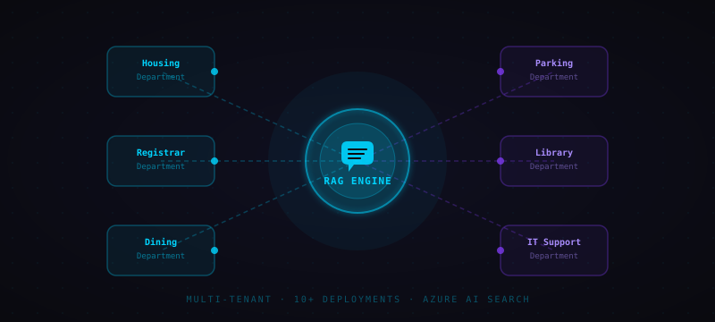
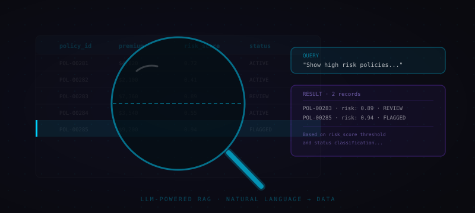
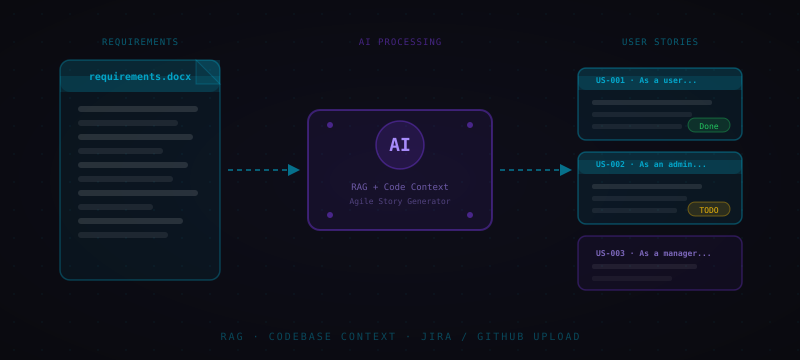
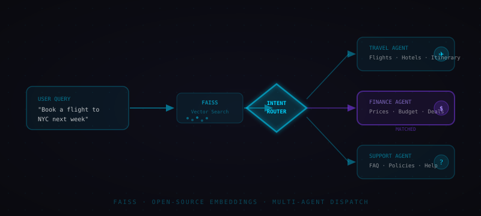
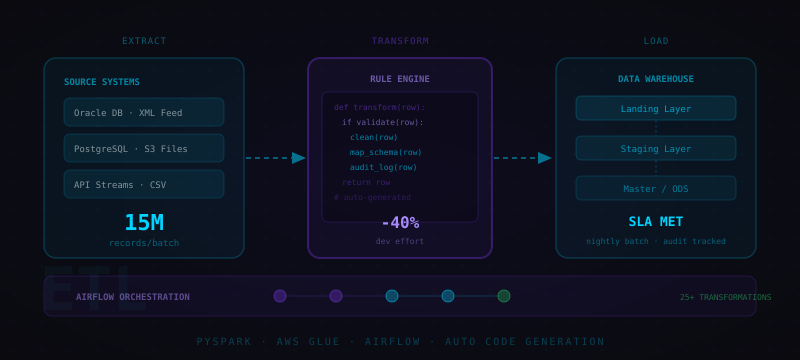
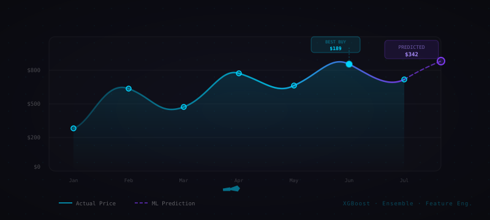
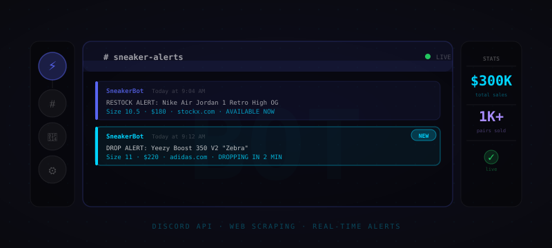
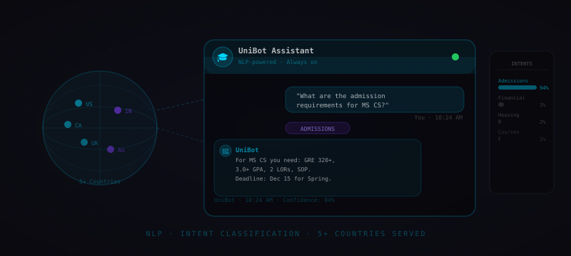

Impact at Scale
What I Build
End-to-end systems, from raw ingestion to deployed intelligence.
Ingestion & ETL
Reliable pipelines to ingest, clean, and unify data from structured and unstructured sources at scale.
Processing & Analytics
Transforming raw data into meaningful features, metrics, and insights that drive downstream modeling.
Modeling & Intelligence
Training ML models to predict, classify, and forecast outcomes, from elasticity models to time-series forecasting.
GenAI & Agentic Systems
LLM-powered apps, RAG pipelines, and multi-agent systems that reason, act, and automate workflows end-to-end.
Education
Experience
- Built and deployed Chat AIU, a multi-tenant RAG platform powering chatbots on 10+ IU department websites, with self-service knowledge ingestion from Confluence, documents, sitemaps, and URLs.
- Improved retrieval quality via semantic reranking and LLM evaluation pipelines; extended with MCP, A2A, and OpenAPI agent integrations for tool-augmented conversational AI.
- Building an ML/LLM decision support system for parking appeals: classifying violations, extracting policy clauses, generating reviewer rationale via fine-tuned SmolLM (135M), cutting adjudication time from weeks to days.
- Designed and built a document ingestion pipeline onboarding 12,000+ Confluence pages into Azure AI Search, automating extraction, chunking, embedding, and index updates.
- Improved retrieval accuracy from 76% → 93% via metadata filtering & reranking; deployed RAG system enabling 250+ staff to cut document lookup from 20–25 min to <10 min.
- Built time-series forecasting models reducing dining footfall forecast error from ~2,000 swipes to ±500/day, driving $2K–$3K daily operational cost savings.
- Engineered nightly batch ETL pipelines processing 12–15M insurance records/batch into Landing → Staging → ODS architecture with row-level audit tracking and reusable transformation modules.
- Orchestrated pipelines with AWS Glue Workflows + EventBridge + SNS alerting, reducing issue resolution time by 25–30%.
- Built CodETL, a platform-agnostic ETL engine enabling 25+ transformations and reducing development effort by 40%. Presented at Deloitte AI & DE Summit.
- Developed a linear mixed-effects regression model across 5,000+ store locations, generating a $1M–$3M profit increase while limiting customer churn to 1%.
- Built DataLens, an LLM-powered RAG portal for natural language querying over structured and unstructured enterprise data.
- Earned 4+ firm awards for successful delivery of 3 internal systems.
- Developed a CV algorithm to enhance low-light astrophotography on mobile phones, improving signal-to-noise ratio using advanced image processing techniques.
- Co-authored IEEE research paper; received Samsung Excellence Award for outstanding contributions to the PRISM internship program.
Projects & Publications

Chat AIU
Multi-tenant RAG platform powering chatbots on 10+ IU department websites with self-service knowledge ingestion from Confluence, sitemaps, and documents.



DataLens
LLM-powered RAG portal for natural language querying over structured and unstructured enterprise data. Presented at Deloitte AI & DE Summit.

SprintlessAI
Generates Agile user stories from requirements docs + codebase context via RAG. Outputs structured stories and supports upload to Jira and GitHub.

Semantic Intent Router
FAISS-based multi-agent routing pipeline that classifies user intent, retrieves the relevant domain, and dispatches to the correct agent using open-source embeddings.

CodETL
Platform-agnostic ETL engine with Airflow-orchestrated topologically sorted schedules, achieving a 40% reduction in dev time across 25+ transformations.

Retail Sales Price Optimization
Price elasticity modeling across 5,000+ store locations driving $1M–$3M profit increase while limiting churn to 1%.


Online Sign Recognition
Time-series handwriting recognition and fraud detection using sequential ML models on pen-stroke data.

Music Emotion Recognition
ML classifier mapping audio spectral features to emotional categories using deep learning.

Flight Price Prediction
Scraped flight data and trained ensemble models to predict ticket prices across routes and date ranges.

Astrophotography Enhancement
Samsung R&D collaboration on a CV algorithm for low-light mobile astrophotography. IEEE published. Samsung Excellence Award.

Flood Region Estimation
Cross-geography generalization of ML models for classifying flooded regions in UAV aerial imagery. arXiv published.


Virtual Mouse
Gesture-based virtual mouse using OpenCV hand tracking for full cursor and click control without hardware.

Streamlit Tutorial Series
210K+ views and 13.5K hrs watch time on a YouTube series covering how to build data apps with Streamlit.

Sneaker Update Discord Bot
Real-time Discord bot for sneaker drops, supporting a client's resale business that generated $300K in sales across 1,000+ pairs.

University Assistant Chatbot
NLP-powered FAQ chatbot for university queries. Custom dataset + multi-model intent classification. Served clients across 5+ countries.